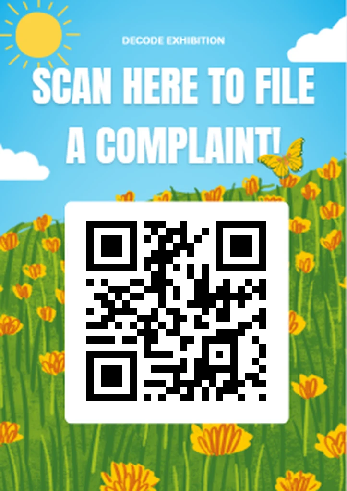

head to the seventh task
???
hint: what did you expect to see before you scanned?
how to unlock this page

At the exhibition, posters like these promised one thing and their codes delivered another. Scan one with your phone: does it take you where you expected?
successfully scanned
meaning-making
the surrounding information affects our perceptions and expectations from the qr code
what you just experienced
QR codes themselves are neutral — they just store data. The meaning arises from human context: signage, location, and call-to-action.
The surrounding text, image, or situation tells us what to think it does: “Scan to pay,” “Scan for menu,” “Scan to enter.” The same pattern becomes a different experience each time.
different perspectives, one language
The QR code is both machine-readable and human-interpreted — a shared language between us and technology.